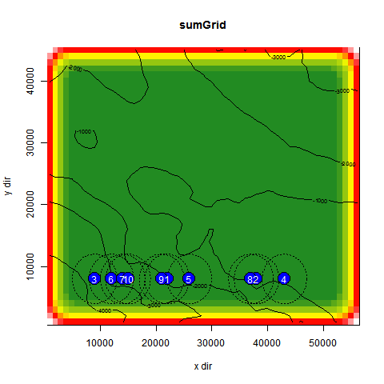
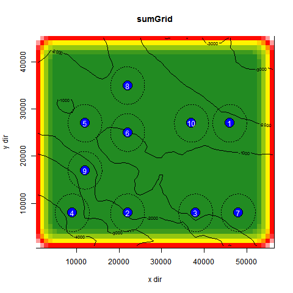

Acousitc Package Developer Guide
This document discusses the general concepts and functionality included within the R package, as well as guidance on how to
extend functionality.
General Program Flow
The algorithm for acousticRun() functions as follows:
1. Acquire bathymetry
2. Simulate Animal Behavior
3. Calculate the GoodnessGrid
4. Place user Sensors
5. Suppress user Sensors
6. Find optimal sensor placements
7. Generate statistical & graphical data
Grids
Within the program, several R matricies or "grids" are used frequently:
-
BehaviorGrid:
Represents the movement patterns of fish over a study period as a probability of their occupation of the cell. The sum of all
cells in the grid should equal 1.
-
TopographyGrid:
Contains the bathymetric data for each cell in the study area. These are negative numbers representing depth in meters.
-
GoodnessGrid:
Represents the "goodness" of a particular cell. This grid is generated from the TopographyGrid and BehaviorGrid by a GoodnessGrid function. Higher
values indicate better choices. Values must be positive real numbers.
Functionality
Bathymetry Acquisition
The generation of the TopographyGrid is handled by the Bathy.R file. Currently, only ArcGIS(limited to simple raster grids) and NetCDF file formats are supported.
The program uses R matricies to represent bathymetry, regardless of the original format of the bathymetry file. It should be
noted that certain R libraries transpose grided data when loading raw data into matricies. The dimensions of
the TopographyGrid dictate the size of the BehaviorGrid, GoodnessGrid, and coverageGrid.
A useful addition to the progrm would be an interface that allowed the program to pull bathymetric data from a server that aggregates
worldwide bathymetry (such as the one found here:
http://maps.ngdc.noaa.gov/viewers/bathymetry/).
Fish Modeling
The modeling of animal behavior is handled by the FishModel.R file. The fish model has access to all parameters passed into the program,
as well as a TopographyGrid for the
study area. The fish() function makes the appropriate method calls based on the value of the fishmodel parameter. The primary
role of fish modeling algorithms is to populate the BehaviorGrid with values between 0 and 1 representing the number of transmissions released
from a cell as a percentage of all pings released durring the study. Useful additions to this module would include the addition of modeling
techniques and algorithms and support for multiple homeranges in the OU model.
GoodnessGrid Functions:
GoodnessGrid functions are functions that calculate a GoodnessGrid for a given study area. Functions of this type have function names starting with
"GoodnessGrid.". The function GoodnessGrid.fun is the handler for all GoodnessGrid calls, and subsequently calls specific GoodnessGrid functions based
on the bias parameter. The primary role of a GoodnessGrid function is to assign to cells a numeric value positively corrolated with it's
desirability as a sensor location. Generally speaking, the calculation of the GoodnessGrid is the most expensive calculation done by the program.
A useful improvement to this module would be multithreading the calculation of the GoodnessGrid to reduce overall execution time. The addition of
other GoodnessGrid functions would also increase the versatility of the program.
suppression Functions:
To find optimal sensor placements (step 6), the package uses a greedy algorithm over the GoodnessGrid to find good candidates for sensor placement (
it chooses to place sensors in the (unoccupied) GoodnessGrid cells with the largest values).
Using this technique, it is possible that multiple cells will have the same goodness value (e.g. on a flat bathymetric plane with equal distribution
of animals across the study area). In these cases, the program will choose the first occurance of the highest valued cells. This will result in
sensors being clumped together in one corner of the study area.

In the above image, all the green cells are equally good choices for the program to pick. As a result, the program picks the first few occurances
of these green cells. Any placement of sensors amongst green cells would be equally optimal, however the pictured network is rather awkward,
providing no coverage for the northern end of the area of interest. The primary role of suppression is to penalize cells of the GoodnessGrid near
sensors and create a more distributed network. In doing so, the absoloute recovery rate of the network decreases, but unique recovery rate
increases. The above image shows a job which was run with a suppressionRangeFactor of 0 (indicating that no suppression should be used).
The below image shows the same job, but with a suppressionRangeFactor of 2 (indicating that the system should suppress cells around a sensor
out to twice the sensor's actual detection range.

Just as GoodnessGrid.fun acts as a handler for GoodnessGrid Functions, suppress.opt acts as a handler for suppression Functions.
Output Files
The program outputs a variety of data as RData, json, text, and graphics. All jobs are given timestamps as a means of identifying the time at which the job
was requested.
The program outputs:
- A <timestamp>-Results.txt file which lists raw R data (grids, parameters, outputs) in plain text,
- A <timestamp>-shortResults.txt which gives a short overview of the results,
- A <timestamp>-Results.RData file which contains the results of the execution in the form of R variables, sufficcient for loading into another program,
- A <timestamp>-Results.json file which contains the same data as Results.txt but in json form (where keys are variable names in the program).
- Several .png files which represent the TopographyGrid, BehaviorGrid, GoodnessGrid, sensor coverage Map, and graphs pertaining to unique recovery rates,
- A .zip file containing the .txt files, RData file, and all .png files associated with the job.
All output filenames contain the timestamp provided by the user, or '-1' if no timestamp was provided.